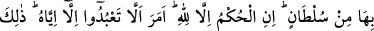
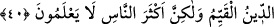

“Çeşitli” altından, gümüşten, demirden, ağaçtan, taştan ya da et-Tibyân da belirtildiği
üzere küçük, büyük ve orta “tanrılar mı” sizin için “daya iyi, yoksa gücüne karşı
durulamaz olan” her şeye galip gelen ve hiçbir zaman mağlub olmayan “bir tek” yani
ilâhlıkta tek olan gerçek mâbûd “Allah mı?”
Burada işaret vardır ki Allah’ın vahdeti (birliği) kesrete (çokluğa) galibdir. Dünya,
hevâ ve şeytana tâbî olanların iddiasına göre onlarda bir hayır olsa da onlar Allah
katında sırf şerdir. Çünkü onlar en yüce isteği ve en şerefli hedefi elde etme yolundan
saptıran varlıklardır.
40. “Allah’ı bırakıp da taptıklarınız, sizin ve atalarınızın taktığı birtakım
isimlerden başka bir şey değildir. Allah onlar hakkında herhangi bir delil
indirmemiştir. Hüküm sadece Allah’a aittir. O size kendisinden başkasına ibadet
etmemenizi emretmiştir. İşte dosdoğru din budur. Fakat insanların çoğu bilmezler.”
“Allah’ı bırakıp da taptıklarınız, sizin ve atalarınızın” tamamen sapıklık ve
bilgisizlik sebebiyle “taktığı” dış dünyada hiçbir karşılığı bulunmayan mücerred
“birtakım isimlerden başka bir şey değildir.” Çünkü isim takılan bu varlıkların
gerçeklikleri yoktur. Çünkü onların hiçbir varlığı yoktur. Böyle olunca onların ibâdetleri
sadece bu isimleredir. Burada hitap, bu iki gence ve onların dininden olanlaradır.
“Allah onlar hakkında” bunlara tapınmasına sebep olan bu isim verme konusunda bu
isim vermenin doğruluğuna delâlet edecek “herhangi bir delil indirmemiştir.” Bu isim
verme üzerine bina edilen tapınma hususunda “hüküm sadece Allah’a âiddir.” Çünkü
ibâdete bizzat lâyık olan yegâne varlık O’dur. Çünkü O, her şeyi yoktan var eden, her
şeyin hükümranlığını elinde bulunduran, varlığı bizâtihi, zorunlu (Vâcib bi’z-zât) yegâne
varlıktır!
Burada sanki “Bu konuda Allah neye hükmetti?” diye bir soru sorulmuş ve cevap
olarak şöyle buyrulmuştur:
“O size” peygamberlerinin diliyle, bir çok delilin var olduğuna delâlet ettiği
“kendisinden başkasına ibâdet etmemenizi emretmiştir. İşte” ibâdeti Allah’a tahsis
etmekten ibâret olan “dosdoğru din” yani sâbit veya müstakim din “budur.”
Kendisinde eğrilik bulunmayan İslâm dinidir. Oysa siz sâbit olanı olmayandan, eğriyi de
doğrudan ayırt edemiyorsunuz!
Allah Teâlâ: “Allah nezdinde hak din İslâm’dır.” (Âl-i İmran, 3/19) buyurur. Dinler
aslî kuralları itibariyle bir, fer’î hükümleri itibariyle ise farklıdır. Ümmetlerin
istidâdlarına göre şer’î hükümlerdeki ârızî çokluk onların birliğine halel getirmez.
“Fakat insanların çoğu bilmezler.” ve bilgisizlikleri içinde bocalayıp dururlar.
Bilesin ki Allah Teâlâ dışındaki bütün varlıklar (mâsivâ) geçici gölgelerdir. Akıllı